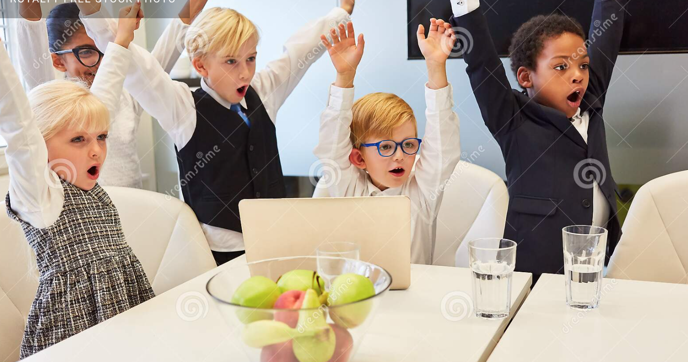

hey guys wasup lmao xd lol (those were akronyms i leanrt today so be poud) so today I'll be showing you my FAVORITE games!!!
Here are my 5 favorite games
Minecraft
[Official Minecraft Website]This game is a sandbox game where you mine and craft for resources and defeat mobs ( DID you know that the Creeeeper model was a messed up pig model???? crazy rite)

Super Mario
[Official Mario Website]This game is a platforming game where you play as Mario and you have to go through obstacles to save da princess from Bowser! My favorit one is where maro get LUIGI and defeats browser!

Valorant
[Official Valorant Website]This game is a 5v5 tactical shooter game where you play certain characters and beat the other team (my mommy said that gun games are violent but who c aress right? 😎 😎 😎 😎)


Geometry Dash
[Official Geometry Dash Website]This game is a rythm-based platformer (I THINK THAT'S WHAT IT'S CALLED) where you play as a cube and avoid obstacles
Undertale
[Official Undertale Website]This game is an RPG styled game where you have to defeat monsters and escape the underground!!!1 my favorit karater is SANS from eatfbound. Mat pat from divertessement conjecture said that sans is ness so ITS truuuue